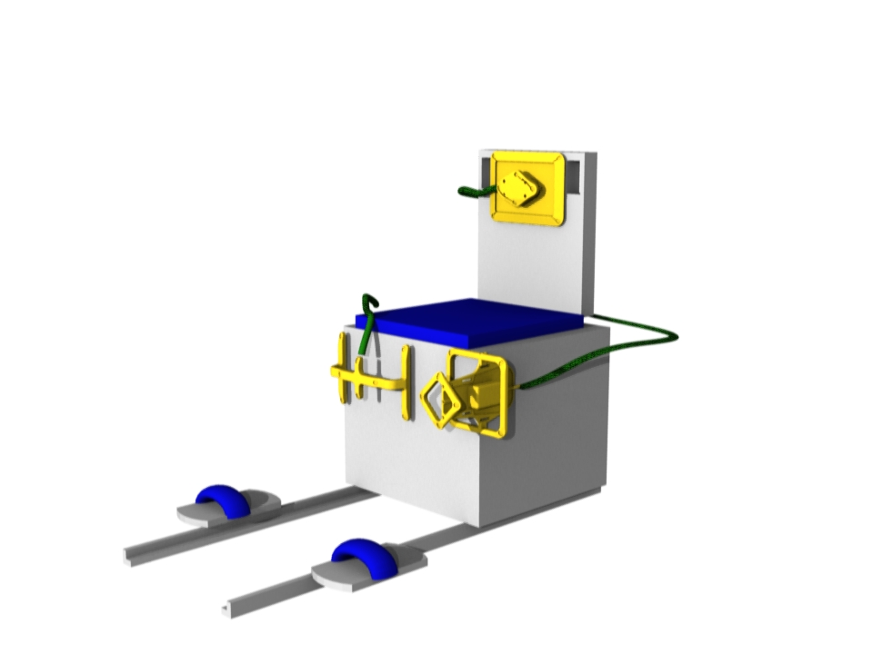

Tracker Alignment
Prepare to perform the alignment procedure for the 3D tracker:

Note: Alignment of the Chest Marker Support on the backrest is critical. Please ensure that the top edge of the Chest Marker Support is aligned with the top edge of the backrest with the cable exiting to the right side of the chair (subject''s right side when seated facing the Tracking Cameras).
Press 'Start' to perform alignment.